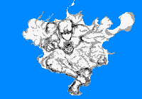

深紫/Deep Purple
C+1800
能力等級：
破壞力C 速度C 射程C 持續力A 精密動作性A 成長性B
能力定位 近距離操控型
能力評定：能操作空氣中氣體密度的能力。可以制造出有毒氣體，變化氣壓，將空氣中的氫和氧混合爆炸等能力。但是因為射程是短到離自己太近的程度，所以太過危險的操作是不會做的。
放出和收回替身是一個迅捷動作，你只有在放出替身的情況下才能使用深紫的技能。控制替身行動會消耗等同于你的動作，即移動動作控制替身移動，標準動作控制替身攻擊。替身的初始射程為10米。替身使用替身使者的相應數據進行檢定和防御。
替身被視為靈體，只有擁有靈視的人才能看見替身。當替身受到傷害的同時，替身使者也會受到等同于傷害值的沖擊傷害。但是當替身使者受到傷害時，替身不會受到傷害。這意味著替身使者和替身在同一個范圍傷害攻擊下，替身使者可能受到二次傷害。
替身使者具備靈視能力以及正常攻擊靈體虛體的能力。
深紫初始自帶【毒瓦斯】和【真空】倆個技能。
【毒瓦斯】：標準動作使用，對10米射程內1點制造2.5米半徑的毒氣，范圍內所有人（如果自己也在，則包括自己）過一個DC為13的強韌豁免，并承受失敗數點中毒點數。
中毒點數類似于燃燒點數但造成毒素傷害，以強韌豁免。中毒點數具有D級毒素來源，能被D級或以上解除毒素來源的能力或效果（非免疫毒素效果）直接解除。目標可以使用一個標準動作抵抗體內的毒素，進行一次強韌豁免，每個成功數將解除1點中毒點數。
【真空】：標準動作使用，對10米射程內一個目標使用，以智力+學識+化學對抗目標的強韌豁免，造成勝出數點嚴重力場傷害，這是C級創傷來源的窒息效果，只對具備呼吸系統的生物生效。
能力開發：
【冷氣/熱氣】 ：D+500
制造出超出正常溫度范圍的冷氣/熱氣，對目標造成傷害。標準動作對以自身為中心10米半徑的所有人分別進行一次攻擊（智力+學識：化學），視當時心情造成灼熱/凍寒傷害。
【催淚瓦斯】：C+1000
標準動作使用，對10米射程內1點造成5米半徑的刺激性氣體，范圍內所有人（同上）過一個DC為（智力+學識：化學檢定成功數）的強韌豁免，并承受失敗數點目眩點數，正常豁免。
范圍內所有人在對這輪內對【催淚瓦斯】的技能判定上，求生技能承受4DP環境減值。
【空氣彈】：C+1000
制造出空氣彈攻擊敵人，擊中目標后還會將目標向后推移一定的距離
標準動作使用，對10米內一個目標進行一次智力+學識：化學攻擊檢定，造成力場嚴重傷害，附帶【高速6】特性。被擊中的目標還會向后倒退20米并倒地，中途撞到障礙物會提前停止后退但是會處于倒地狀態。
【催眠瓦斯】：B+2000
制造出可以讓敵人進行淺層睡眠的氣體。
標準動作使用，在面前10*10*10米內的范圍內制造出可使人進入淺層睡眠狀態的氣體，持續一輪。范圍內的所有人需要進行一次強韌豁免對抗你的智力+學識：化學+8DP的攻擊檢定，若是失敗，則立刻進行普通的可被喚醒的睡眠狀態。
這是B級藥物來源的睡眠效果。
你本人無需進行檢定，但若是你在這輪結束前進入催眠瓦斯5米范圍內，也需要正常進行豁免。
【爆炸】：B+2000
將空氣的中氫和氧混合爆炸的能力。
標準動作對10米內的一個目標使用，進行一次智力+學識：化學的攻擊檢定，目標反射豁免，造成勝出數點火焰傷害，附帶等同于傷害數的燃燒點數，正常豁免。被擊中的目標還會向后倒退20米并倒地，中途撞到障礙物會提前停止后退但是會處于倒地狀態。
當你的學識達到10級后，解鎖新的運用方式【大爆炸】
【大爆炸】：攻擊目標擴大到面前10*10*10的所有人，你本人無需進行檢定，但若是你在攻擊過程中進入【大爆炸】5米范圍內時，也需要正常進行豁免。
【蜃氣樓】：A+4000
制造出使人陷入幻覺的氣體。
標準動作使用，在以自己為中心，10米半徑范圍內制造出使人陷入幻覺的氣體，范圍內的所有敵人需要以強韌豁免對抗你的智力+學識：化學檢定，若是失敗，則在失敗數輪內他們會陷入混亂狀態：
你可以將場上的人劃分為【友方】【中立】【敵人】。
對于陷入混亂狀態的目標來說，他們眼中的友方目標是你指定的【友方】，他們眼中的中立目標是你指定的【中立】，他們眼中的敵對目標是你眼中的【敵人】。
對于陷入混亂狀態的目標來說，他們受到來自別人的增益性效果，是【友方】提供的；他們受到的傷害和異常，減益性效果，是【敵人】提供的。而【中立】單位對他們什么都沒做。（哪怕事實上并不是這樣）
對于陷入混亂狀態的目標來說，他們進行攻擊或者造成負面效果時，只能將【敵人】做為目標，而他們進行增益性效果時，只能選擇【友方】做為目標。除非使用的是不分敵我的能力或者是目標為他們自己的能力。
在發動【蜃氣樓】前，你可以自由動作進行一次【智力+學識：化學】的檢定，范圍內的所有敵人在對【蜃氣樓】的效果進行豁免時，會在強韌豁免上承受等于這次檢定成功數點DP環境減值。
這是A級藥物來源的混亂效果。
【真空地帶】：A+4000
在面前制造出一片真空地帶，可以不由分說地奪去仍需呼吸的敵人的性命。
標準動作使用，進行一次智力+學識：化學攻擊檢定，面前10*10*10米內的所有人以強韌豁免，造成勝出數點力場嚴重傷害。
同時他們還能承受等同于傷害數的疲乏異常點數和暈眩異常點數，分別正常豁免。
只要有一個勝出數，還具備呼吸系統的目標就會被奪去性命，這是A級創傷來源的即死效果。
你本人無需進行檢定，但若是你在攻擊過程中進入【真空地帶】5米范圍內時，也需要正常進行豁免。
【污染】：S+8000
制造出含多種毒素的污染氣體，會給目標造成各種負面效果包括但不限于異常狀態。
標準動作使用，進行一次智力+學識：化學攻擊檢定，對面前10*10*10米內的所有人造成以下負面效果（每項都是單獨豁免）
【腐爛】：造成檢定成功數點惡性腐蝕傷害，強韌豁免。
【毒藥】：造成等同于【腐爛】帶來的傷害值點毒素異常點數，強韌豁免。
中毒點數類似于燃燒點數但造成毒素傷害，以強韌豁免。中毒點數具有S級毒素來源，能被S級或以上解除毒素來源的能力或效果（非免疫毒素效果）直接解除。目標可以使用一個標準動作抵抗體內的毒素，進行一次強韌豁免，每個成功數將解除1點中毒點數。
【麻痹】：造成等同于【腐爛】帶來的傷害值點麻痹異常點數，強韌豁免。
【混亂】：不由分說地對在自己攻擊范圍內的友方單位進行攻擊，強韌豁免，DC為你的【腐爛】造成的傷害值。持續失敗數輪。這是S級毒素來源造成的效果。
【火焰】：造成檢定成功數點惡性火焰傷害，反射豁免。
【黑暗】：被剝奪視覺，陷入目盲狀態，以強韌豁免，DC為你的【腐爛】造成的傷害值。持續失敗數輪，這是S級毒素來源造成的效果。
【寂靜】：被剝奪聽覺，陷入耳聾狀態，以強韌豁免，DC為你的【腐爛】造成的傷害值。持續失敗數輪，這是S級毒素來源造成的效果。
你本人無需進行檢定，但若是你在攻擊過程中進入【污染】5米范圍內時，也需要正常進行豁免。